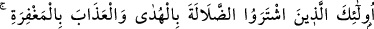
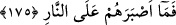
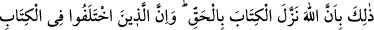
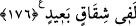

175. Onlar doğru yol karşılığında sapıklığı, mağfirete bedel olarak da azâbı satın
almış kimselerdir. Onlar ateşe karşı ne kadar dayanıklıdırlar!
Allah’ın âyetlerini az bir paha ile satanlar hakikatte bunu, az bile olsa para için
yapmıyorlar. Bilakis bunlar, dünyaya nisbetle satın alınması mümkün olmayan dalâleti,
herhangi bir şeyin mukabilinde verilebilecek cinsten olmayan hidâyet karşılığında;
âhırette çekecekleri azâbı da, kıymetini bilenlerin elde etmek için koşturdukları mağfiret
mukabilinde satın almışlardır. Onlar hidâyeti bırakıp dalâlet yollarına sapmak sûretiyle
cehennem yârânının amellerini işlemek husûsunda ne de sabırlıdırlar. Burada yine
ateşten maksad, ona sürükleyen sebeblerdir.
Âyette geçen taaccüb, Allah Teâlâ’ya değil kullara âiddir. Taaccüb, muhâtabın bir şey
hakkında hayretler içinde kalması demek olup menşei, hayreti mûcib olan olayın
sebebini önceden bilmemektir. Bu ise Allah için geçersizdir.
176. O azâbın sebebi, Allah’ın, kitabı hak olarak indirmiş olmasıdır. (Buna
rağmen farklı yorum yapıp) kitapta ayrılığa düşenler, elbette derin bir
anlaşmazlığın içine düşmüşlerdir.
Allah Teâlâ’nın hak ile doğru olarak indirdiği kitabı yalanlamak ve gizlemek sûretiyle
reddeden, cehâlet ve sapıklık yolunu tutan herkes ateş ile ve daha pek çok çeşitli azâb
ile cezâlandırılırlar. Bir kısmını kabûl edip diğer bir kısmını reddetmek sûretiyle
Allah’ın indirdiği ilâhî kitaplara veya âyetlerinin bazısına inanıp, Peygamber Efendimiz
(s.a.)’in bi’seti ve güzel vasıfları hakkındaki Tevrât âyetlerinden bazısını değiştirerek
inkâr etmekle veya bu Kur’ân şiirdir, sihirdir, kehanettir gibi iddiâlarda bulunarak
Kur’ân-ı Kerîm hakkında ihtilâfa düşenler, şiddetli bir azâbı gerektirecek şekilde haktan
ve doğrudan uzak bir ayrılık içindedirler.
Bu âyet-i kerîmelerde dünyevî maksadlarla hakkı gizleyenler için büyük bir tehdîd
vardır. Bu sebeple alimler bildikleri halde hakkı gizlemekten sakınsınlar. Âlimlerin
sultanlara, âmirlere, vezirlere ve dünyâ erbâbına hakkı söylemekten çekinmelerinin
pekçok sebebi vardır. Mertebelerinin zâyî olması ve onların yanındaki kadr ü
kıymetlerinin düşmesinden korkmaları; onların ihsânına nâil olmak veya dünyâ malı
elde etme arzuları, mansıp ve riyâset elde etme istekleri veya yiyecek, içecek, binecek
ve barınacak şeyler elde etme, ev ve zinet eşyalarına, atlara, hizmetçilere ve saire sahip
olma düşünceleri, bu sebeblerden birkaçıdır. Bu durumda olup yağcılık eden ve